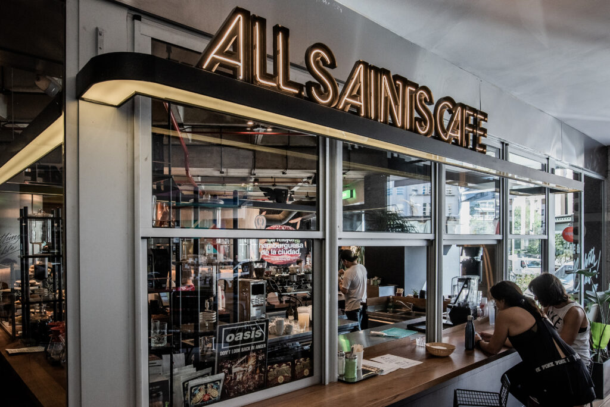

Punto 02 · El presente
All Saints Cafe
Un laboratorio de especialidad de estética industrial: Brew Bar, trazabilidad del grano y baristas de precisión en una casona de esquina emblemática.
LA TÉCNICA
La Brew Bar como centro de la escena.
El corazón del local es su inmensa Brew Bar (barra de filtrados), donde se vuelve visible la trazabilidad del grano desde su finca de origen.
Acá el barista moderno cumple un rol técnico: balanzas de precisión, termómetros y tiempos medidos convierten cada taza en un experimento reproducible.
MÉTODO
V60 / CHEMEX
DOSIS
±0.1 g
AGUA
92-96 °C
EXPERIENCIAS
V60 / Chemex en vivo
Observá la química del filtrado desde la barra principal.
Asesoría de tueste
Perfiles y notas de cata guiadas por el barista.
Retail especializado
Equipamiento y grano de diseño para llevar.